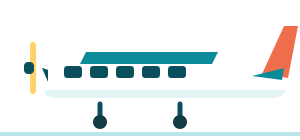

A 10 nap
A 10 nap

Belföldi repülő
Air Seychelles HM-3145, 14:30
kb. 90 200 Ft4062 SCR
két főre, adóval együtt (élő kosárár, 2026-11-07; 248,80 €); ezen az áron 3 hely maradt
- Praslin 14:30 → Mahé 14:50. Kijelentkezés után kb. 3 óra marad Praslinon.
- Az autót 13:15-kor adjátok le a praslini reptéren. Az utasfelvétel 1 órával indulás előtt zár; a praslini határidő nincs közzétéve, a mahéi szabállyal számoltam.
- 15:30-kor autó a mahéi reptéren, kb. 35 perc a Kempinskiig. Így a mahéi autó 3 napra kell, nem 4-re.